Social
O Daimond muda conforme o que quem o usa relata. O painel Social é onde isso se escreve, se relê e se vota, e onde ficam as mensagens, as pessoas de quem elas vêm, os grupos e os compartilhamentos. Esta página é sobre fazer uma nota chegar: como dizer o que aconteceu, e como se chamam as partes da tela, para que quem ler saiba na hora de que coisa você está falando.
Uma nota que diz que a coisa no alto à esquerda está quebrada custa uma busca a alguém, e às vezes encontra a coisa errada. Uma nota que diz o chip Diamonds da barra superior não. Nenhuma das duas dá mais trabalho. A diferença é só saber como as partes se chamam, e é para isso que serve o resto desta página.
Escrever uma nota sobre a qual se possa agir
Três coisas, e a primeira é a que mais falta.
-
Onde está
Nomeie a parte e a região em que ela fica. A tela tem quatro regiões e umas vinte espécies de parte, e nomear as duas torna quase tudo único: há cruzes por todo o Daimond, mas só uma cruz na linha Tudo .
-
O que você esperava
Diga o que você pensou que ia acontecer. Essa é a metade que quem lê não consegue adivinhar, e muitas vezes é todo o relato: um controle que faz exatamente aquilo para o que foi feito, e ainda assim surpreende as pessoas, é um defeito do controle e não das pessoas.
-
O que aconteceu em vez disso
O que você viu, na ordem em que viu. Não o que você acha que causou. Uma causa adivinhada estreita a busca, e uma adivinhada errado estreita para longe do defeito.
O X no alto à esquerda está quebrado.
A cruz na linha Tudo guardou a barra lateral inteira. Eu esperava que ela fechasse aquela linha.
Mais algumas coisas que poupam uma resposta.
- Uma nota, uma coisa. Dois defeitos em uma nota viram uma proposta que não pode ser terminada, porque metade está resolvida e metade não.
- Diga qual versão. A Versão linha do painel de administração a nomeia, e passar o cursor por ela dá o identificador da versão. Um defeito já resolvido se lê exatamente como um defeito que ninguém consegue reproduzir.
- Diga o que você estava fazendo. Até um rastro curto ajuda: qual painel estava aberto, se você estava no telefone, qual paleta você usava. Um defeito pode estar em uma paleta, ou em uma largura de tela, e em nenhum outro lugar.
- Escreva mesmo assim. Se você não consegue nomear a parte, descreva-a e diga onde ela estava na tela. Uma nota aproximada vale muito mais do que uma nota que ninguém escreve.
Dizer onde: as quatro regiões
O Daimond tem uma barra superior no alto, em toda a largura, e sob ela três regiões lado a lado: a barra lateral à esquerda, o palco no centro e o dock à direita. Quase toda nota pode começar nomeando uma dessas quatro. A interface percorre as quatro e diz para que serve cada painel; esta página é sobre as partes menores que ficam dentro delas.
As partes, pelo nome
Cada palavra abaixo é uma que o Daimond já usa, na própria interface ou neste guia. Cada verbete mostra a coisa real, recortada de um Daimond em funcionamento, para você comparar o que está na sua frente com a imagem e usar a palavra com confiança.
As imagens foram tiradas em uma das paletas escuras. Na sua as cores serão outras, e no telefone algumas dessas partes se mudam de lugar; os nomes, não.
chip
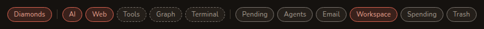
Um botãozinho arredondado que liga ou desliga uma coisa. A fileira deles por toda a barra superior é a fileira de chips, um chip por painel, preenchido enquanto aquele painel está aberto.
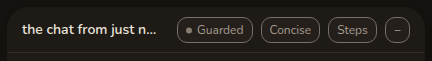
Chips também são usados em outros lugares: em um cabeçalho, como acima, em um bloco, e na barra lateral como etiquetas. Diga qual, e um chip fica sem ambiguidade.
Diga: o chip Espaço da fileira de chips.
bloco
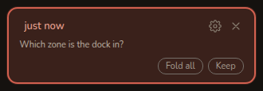
Um Diamond ou um chat, como ele aparece na barra lateral. Um bloco carrega o próprio nome, a própria engrenagem, a própria cruz e tudo mais que pertence àquele trabalho.
Diga: a engrenagem de um bloco de chat.
cabeçalho
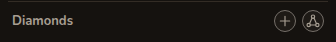
A tira que nomeia uma lista ou um painel e carrega os botões que agem sobre o conjunto todo. Cada lista da barra lateral tem um, e cada painel também.
Diga: o mais no cabeçalho Chats .
cruz
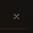
A cruz que fecha alguma coisa. O Daimond tem uma cruz, desenhada de um jeito só, em cada painel, bloco, diálogo, menu, gaveta e folha.
Ela sempre fecha a única coisa em que está e nunca nada maior, então nomear aquilo em que ela está nomeia a cruz com exatidão.
Diga: a cruz na linha Tudo .
engrenagem
O botão de ajustes. Onde uma coisa tem ajustes próprios, eles estão atrás de uma engrenagem naquela coisa: em um bloco, na linha de identidade, em uma caixa de correio.
Diga: a engrenagem do bloco do Diamond.
luz
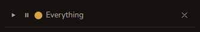
A luz redonda ao lado de um play e um pause, que diz se aquela parte do Daimond vai agir por conta própria. Verde quando tudo o que está configurado está rodando, âmbar quando parte está retida, vermelho quando nada está rodando — ou retido, ou nada configurado. Passe o cursor e ela diz qual dos dois.
Toda luz do app depende da que está na linha Tudo , que fala por todas.
Diga: a luz na linha Tudo está âmbar.
divisor
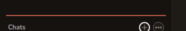
Um traço que você pode arrastar para dar mais espaço a uma lista ou a um painel, e devolver ao lugar com um clique duplo. Há dois na barra lateral: um entre os Diamonds e os chats, outro acima do painel de administração.
Diga: o divisor acima do painel de administração.
linha
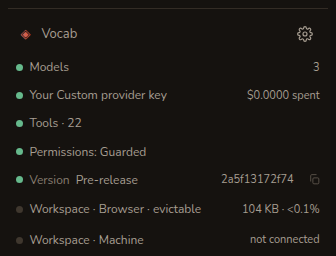
Uma linha em uma pilha delas, que responde a uma pergunta. O painel de administração é feito de linhas; as caixas de correio, as pastas, os dispositivos e os arquivos também.
Uma linha sobre a qual se pode agir é um botão, e ela abre aquilo que nomeia.
Diga: o chip Versão linha do painel de administração.
linha de gastos
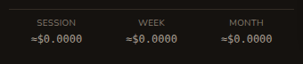
As três cifras ao pé da barra lateral: esta sessão, esta semana, este mês. Ela se esconde enquanto nada foi gasto.
Diga: a célula da semana da linha de gastos.
redator
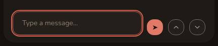
A caixa em que você digita, com o botão de enviar ao lado. Existe uma, ao pé do palco, e ela fala com o que estiver no palco: um chat, ou o daimon de um Diamond.
Diga: o botão de enviar do redator.
face
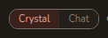
Um Diamond tem duas, e esta chave escolhe qual você está olhando: o Cristal, que é o que o Diamond sabe, e a Conversa, que é como ele veio a saber.
Diga: na face de cristal de um Diamond.
etiqueta
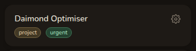
Uma palavra sob a qual você arquiva um Diamond. As etiquetas ficam no bloco como chips pequenos, e a linha Filtrar por etiqueta acima da lista a estreita às que você escolher.
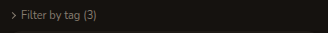
As etiquetas são só suas: nunca vão para um modelo, e nunca entram em um cristal.
Diga: os chips de etiqueta sob Filtrar por etiqueta.
diálogo
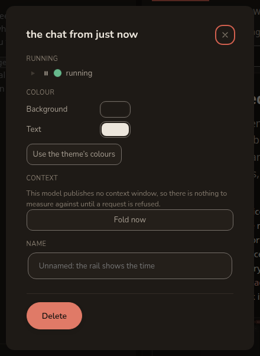
Um cartão que se abre sobre o app e espera uma resposta. O título dele está na mesma linha que a cruz, e Esc faz o que a cruz faz.
Diga: o chip Excluir botão no diálogo de um bloco de chat.
galeria
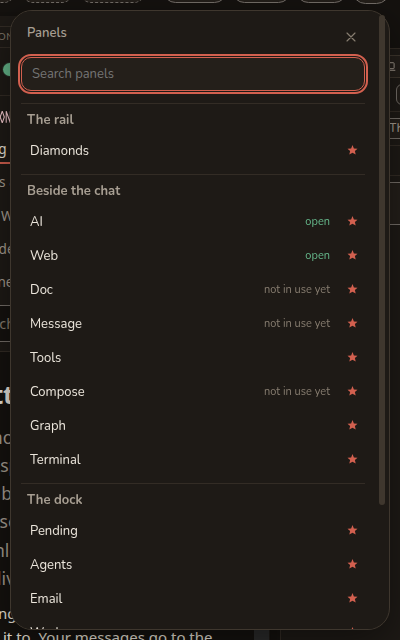
Todos os painéis que existem, buscáveis, agrupados por região, cada linha dizendo se aquele painel está aberto e trazendo o alfinete que decide se o chip dele fica na barra superior. Ela se abre pelo chip ⋯ no fim da fileira de chips.
Diga: o alfinete na linha Lixeira da galeria.
caixa Ir para
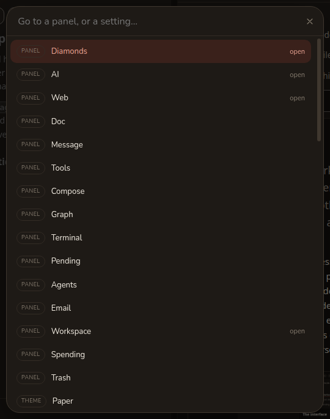
O caminho do teclado para qualquer coisa: Ctrl K, ou Cmd K em um Mac. Ela alcança cada painel e cada ajuste digitando, inclusive os que nenhum chip está mostrando.
Diga: digitar o nome de uma paleta na caixa Ir para.
folha
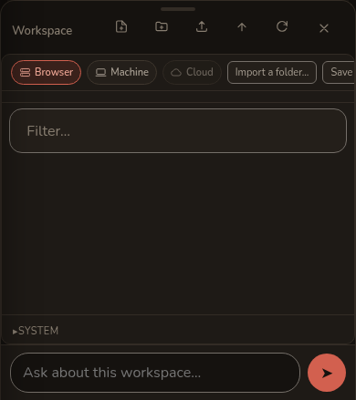
No telefone, um painel se levanta sobre o chat como uma folha que você pode arrastar para cima e para baixo. Ela tem uma barra de pega no alto, uma cruz ao lado, e a única caixa em que você pergunta sobre ela.
Diga: a barra de pega da folha Espaço.
gaveta
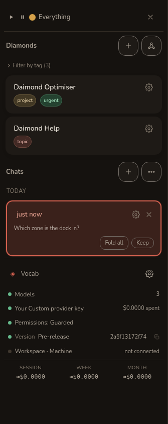
No telefone, a barra lateral entra pela esquerda como uma gaveta. É a barra lateral inteira, então tudo que há nela mantém o próprio nome. O botão que a abre são os três traços no alto à esquerda.
Diga: o painel de administração, descendo a gaveta.
clipe
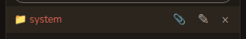
Anexa o que você está lendo àquilo em que você está trabalhando. Ele está em cada linha do painel Espaço e no cabeçalho de um documento, e só é desenhado enquanto há algo a que anexar.
Diga: o clipe em uma linha de pasta.
Mais algumas palavras que o resto do guia usa, sem nada para fotografar: um painel é uma das coisas que uma região carrega, cada uma com nome próprio, de IA a Lixeira; um cristal é o que um Diamond sabe, guardado como documento; um daimon é o agente que pensa por um Diamond; um trabalhador é um agente que um daimon manda fazer um trabalho. Chats & Diamonds explica os quatro.
Duas outras pertencem ao painel Social, e nenhuma das duas pode ser fotografada. A forja é onde o trabalho sobre o Daimond é acompanhado: um repositório público, fora deste dispositivo, no qual uma nota que você envia chega como proposta. Sua voz é a linha de texto que a forja imprime uma vez para você: um segredo que pertence a uma pessoa e pelo qual a forja te procura, guardado criptografado neste dispositivo e nunca mostrado de novo. O painel Social mais abaixo é onde as duas são usadas, e é o único lugar do Daimond em que qualquer uma das duas palavras aparece.
Onde existem duas palavras
Algumas coisas no Daimond de fato atendem por mais de um nome, em geral porque o app diz um e este guia diz o outro. Elas estão aqui para que ninguém gaste uma frase se desculpando por usar o errado. Os dois são entendidos, e uma nota que use qualquer um deles é uma boa nota.
- A região do centro é o palco neste guia e Ao lado do chat na galeria de painéis.
- O painel sob o divisor de baixo da barra lateral é o painel de administração em tudo que um leitor pode ver, e o cabeçalho dele diz Administração.
- A Ctrl K se chama Ir para, e este guia também já a chamou de paleta. Paleta é também a palavra para os onze esquemas de cor, então caixa Ir para é a que convém preferir.
- O botão que abre a gaveta no telefone diz Menu, e o que ele abre é a barra lateral.
Se você encontrar outro, isso merece uma nota própria. Dois nomes para uma coisa são um pequeno defeito do app, não de quem relata.
Pessoas, e a primeira troca
Todo o resto desta página se apoia em um ato: duas pessoas passarem a ter a chave real uma da outra. Nada pode ser selado para alguém de quem o Daimond não tem chave, então, até que um código tenha sido trocado, a lista Pessoas diz exatamente isso, e a caixa de mensagens diz que não há ninguém para quem escrever.
Dois botões ficam acima da lista. Mostrar meu código põe na tela o seu próprio código : um cartãozinho assinado que carrega a sua chave, a chave separada com que uma mensagem para você é selada, e o nome que você se deu. Ele é desenhado como um símbolo para a câmera da outra pessoa, e repetido embaixo como uma linha de texto começando por DMND-ID1. para quando não há câmera. Adicionar alguém é a outra metade do mesmo ato: a câmera deste dispositivo, e uma caixa para colar um código.
Ler na sala, ou ler um número em voz alta
Os dois caminhos registram o código. Só duas coisas podem elevar uma chave a conferida, e qual delas é oferecida depende de como o código chegou e não do que ele diz.
- A câmera deste dispositivo, pessoalmente. Você o leu da tela da outra pessoa, então não havia canal para alguém se meter entre vocês, e a linha oferece Marcar como conferida agora.
- Qualquer outra coisa — uma colagem, um link, um código que alguém te mandou — continua uma chave nova, e o diálogo diz isso já na chegada. O que entregou aquilo poderia ter posto uma chave própria e assinado o resultado impecavelmente, então um cartão que confere prova que quem tem aquela chave o compôs, e nada sobre quem essa pessoa é.
O caminho para cima a partir daí é Comparar números de segurança: sessenta dígitos em doze grupos de cinco, os mesmos dos dois lados, que vocês leem um para o outro numa chamada ou pessoalmente. Os números batem registra isso. Eles são diferentes diz que alguém está entre vocês e que essa chave não deve ser usada. Ler os dígitos em uma mensagem não prova nada, porque o que pudesse trocar as chaves poderia trocar a mensagem.
O que uma linha diz
Cada pessoa é uma linha: um nome, uma linha sob o nome e uma impressão digital. Enquanto a chave não está conferida, o nome é desenhado como a afirmação que ele é — se chama “Ada” —, porque um nome é algo que quem o usa digitou. Uma vez conferida, sabe-se quem está do outro lado e o nome pode ser o nome dela.
A linha sob o nome é o único lugar do Daimond em que a situação de uma chave é desenhada, e é uma linha e não um selo, para que não possa ser lida de um só relance junto com outra coisa. Ela diz uma de cinco coisas: que esta é uma chave nova que você não conferiu; que foi conferida pessoalmente, com a data; que foi conferida pelo número de segurança, com a data; que é uma chave diferente daquela que você conferiu; ou que está bloqueada.
Bloquear em qualquer linha detém aquela chave no relé: nada mais dela é carregado, e nada disso é dito a ela. Desbloquear levanta o bloqueio. Nada nesta lista é editado ou apagado: cada cartão, cada conferência e cada bloqueio são acrescentados a um registro neste dispositivo, e a lista é reconstruída a partir desse registro, com cada assinatura conferida de novo, cada vez que ela é desenhada.
Mensagens privadas
Uma mensagem é selada neste dispositivo para uma chave que a outra pessoa tem, e aberta no dispositivo dela. Nada que esteja no meio pode lê-la, e isso nos inclui: o relé carrega texto cifrado e não tem como fazer outra coisa com ele. O que ele vê é o que o encaminhamento exige — qual conta, quando, e quantos bytes — e isso vale ser dito em vez de deixado de lado.
Ao pé da visão Mensagens está a caixa em que você escreve. Acima dela, um seletor nomeia para quem vai: as pessoas cuja chave de selagem este dispositivo tem, e os grupos de que você entrou. Sob o seletor, uma linha diz quem pode ler o que você está a ponto de digitar, e ela muda com a escolha, porque Privado. Só você e a pessoa para quem escreve podem ler isto. seria falso sobre um grupo de doze. Enviar em particular envia. Um texto com mais de 8.192 caracteres é recusado em vez de cortado, pelo motivo de que meia mensagem não é uma mensagem mais curta.
Quando uma chega
Enquanto a visão Mensagens está aberta, o Daimond mantém um pedido aberto no relé, então uma mensagem que pousa é desenhada sem que você aperte nada. Com o painel fechado, você a encontra na próxima vez que o abrir — e pela contagem.
A Social da fileira de chips carrega um número, e o total do app inteiro vai para o título da aba do navegador e para o ícone do app onde a plataforma desenha um. É uma contagem do que chegou e não uma memória do que você olhou, e esta versão não tem nada que marque uma mensagem como lida, então o número fica.
Uma primeira mensagem de alguém que você não aceitou não entra na lista. Ela espera acima dela, sob Esperando sua resposta, com a impressão digital da pessoa e o que ela escreveu, e três botões:
- Aceitar a leva para a lista, e as mensagens seguintes dela vão direto para lá.
- Ignorar tira a linha. Não escreve nada, e não diz nada a ela — é só isso, para que quem envia nunca consiga distinguir um ignorar de um silêncio.
- Bloquear detém a pessoa no relé, como faz a linha em Pessoas .
O que é dito, e o que não é prometido
- Enviado, nunca entregue. O relé responde a uma entrega bloqueada exatamente como responde a uma que aceitou, de propósito, para que Bloquear não possa ser distinguido de Ignorar. Então um envio a um grupo diz para quantas pessoas ele foi enviado , e nomeia qualquer um para quem o relé não o aceitou.
- Uma caixa cheia é dita. Uma caixa guarda quinhentas mensagens não recolhidas; passado isso uma mensagem não chega, e a quem enviou é dito isso em vez de dizer que ela foi.
- Trinta dias, e o relé solta. Uma mensagem que ninguém recolhe é descartada depois de trinta dias e quem a enviou recebe um aviso, na seção própria dele abaixo da lista. Uma mensagem que expirou deixa esse aviso em vez de um vazio, para que um silêncio nunca seja confundido com nada ter sido enviado.
- Nada entra em fila. Uma mensagem que não pôde ser enviada não está enviada, e nada tenta de novo às suas costas. A mesma regra que a caixa de notas mantém.
- Os seus próprios dispositivos as veem. As mensagens, e uma cópia do que você envia, viajam com o pacote criptografado que a sincronização carrega entre os seus dispositivos. Neste dispositivo elas ficam criptografadas sob a sua frase-senha, então, enquanto o Daimond está bloqueado, a lista diz isso em vez de mostrar uma lista vazia.
Grupos
Um grupo é um chat de grupo, e ele fica ao pé da visão Mensagens e não atrás de um chip próprio. Não há chave compartilhada: uma mensagem para um grupo é selada uma vez para cada integrante, um cadeado por pessoa dentro do mesmo envelope. Disso decorrem três coisas, e cada uma está na tela onde importa, antes do aperto e não depois.
- Entrar não mostra nada de antes. As mensagens enviadas antes de você entrar nunca foram seladas para a sua chave, então nenhum dispositivo pode abri-las para você.
- Tirar alguém não retira nada. A pessoa fica com todas as mensagens que já lhe foram enviadas e não recebe nada dali em diante, e é por isso que o controle diz Parar de enviar para e nunca remover.
- Fechar é definitivo, e não destrói nada. Todos ficam com todas as mensagens; ninguém pode escrever nele de novo. O Daimond pergunta uma vez antes de isso acontecer, e fechar tem um título próprio mais abaixo.
Para criar um, dê um nome e escolha entre as pessoas de quem você tem um cartão; Criar este grupo avisa a elas, e diz a quantas foi avisado. Alguém sem cartão não pode ser adicionado, porque não haveria nada com que selar para essa pessoa. Um grupo tem no máximo 255 pessoas, e uma mensagem para um grupo é uma entrega separada para cada integrante, então um grupo grande é lento e enche caixas muito antes de esse teto importar.
Um convite aparece sob Convites de grupo, com Entrar e Agora não. As mensagens enviadas ao grupo enquanto você não respondeu esperam com o convite: entrar em um grupo é o que aceita as pessoas que estão nele.
Só a pessoa que criou um grupo pode mudar quem está nele ou encerrá-lo, porque o nome que um grupo tem para si mesmo é derivado da chave dela e mais ninguém pode escrever uma lista de integrantes para ele. Todos os outros veem a lista sem botões acima. Um integrante tem Sair deste grupo, que é local, não retira nada e não avisa ninguém; a pessoa que criou o grupo não pode sair dele, já que a próxima lista que ela escrever a nomearia de novo.
Fechar um grupo
Fechar é o único ato de quem criou o grupo que não pode ser desfeito. O botão diz Fechar este grupo — não dissolver, e não excluir —, porque nada é destruído com isso.
Um diálogo pergunta uma vez, com o título Fechar este grupo para todos?, e ele diz: “Fechar um grupo o fecha para todos. Ninguém poderá escrever nele de novo, você incluído; todas as mensagens já enviadas ficam onde estão. Não pode ser desfeito.” Abaixo disso ele nomeia o grupo, e o botão que faz isso diz Fechar para todos. Descarte o diálogo e o grupo fica exatamente como estava.
O que o aperto faz é escrever uma lista de integrantes que não nomeia ninguém, e entregá-la a todos que estavam nele. Todo leitor a obedece, então nada mais pode ser enviado àquele grupo por ninguém, incluída a pessoa que o fechou, e nenhuma lista posterior pode reabri-lo. Nada é apagado em lugar algum: cada integrante fica com cada mensagem que já tem.
O painel Social
Uma nota se escreve no painel Social , que fica no dock, ao lado do seu trabalho, para que uma nota sobre o que está na tela possa ser escrita sem sair dela. O cabeçalho dele carrega cinco chips, e um está preenchido enquanto você o está olhando: Mensagens, Pessoas, Compartilhar, Notas e Propostas. Ele abre em Notas.
O resto desta seção é Notas e Propostas, que são sobre o próprio Daimond. As outras três são sobre outras pessoas, e cada uma tem uma seção própria mais abaixo: Pessoas primeiro, porque nada pode ser enviado a ninguém antes de um código ter sido trocado.
Uma nota que você envia não para na Oxedyne. Ela vai para a forja, o lugar onde o trabalho sobre o Daimond é acompanhado, e chega lá como uma proposta que qualquer pessoa com aquele repositório pode ler. O chip Propostas é essa mesma forja, lida de volta.
Sua voz
Tudo que sai deste dispositivo vai sob uma voz. A voice is a run of 43 characters the forge makes for you once: a secret belonging to one person, which the forge looks you up by. It is the whole of your identity there. No name, no handle and no address travels with what you write, and this browser is never told what your voice is called.
You cannot make one and neither can Daimond. Voices are given out by invitation, one person at a time, by whoever runs the repository — so if you have not got one, ask Oxedyne for an invitation link. Following that link shows you who invited you and what you would be allowed to do; you accept, and the forge makes your voice in front of you and shows it once. Copy it then. It is never shown again, and losing it means asking for another invitation.
Then you put it in the panel. Press Paste your voice, paste those 43 characters in, and press Salvar a voz. If what you copied brought the word secret along in front of it, Daimond takes that off and keeps the 43 characters. If it will not take what you pasted, the secret has been broken somewhere in the middle: copy it again in one piece. Daimond holds it on this device, encrypted under your passphrase, and the gateway it passes through on its way out stores nothing. Esquecer removes the copy on this device.
Sem voz, só existe Guardar : o painel não oferece Enviar, e também não oferece votar nem responder.
Escrever uma
Sob o chip Notas está a caixa de notas. Escreva nela as três coisas do começo desta página: onde está, o que você esperava, o que aconteceu em vez disso. A primeira linha é o título e o resto é o que aconteceu; a frase ao lado dos botões diz isso.
Abaixo da caixa há uma linha com o título O que vai junto. Ela contém uma linha: a versão, o idioma, o tamanho da janela, se você está no telefone, a paleta que você usa e quais painéis estão abertos. Esse é o quarto conselho acima, reunido para você em vez de pedido de você, e é mostrado nos caracteres exatos com que vai viajar. A linha tem uma cruz, e fechá-la tira a linha da nota além de tirá-la da tela.
Depois dois botões, e a diferença entre eles é tudo o que este painel promete.
Suas próprias notas estão listadas abaixo da caixa, as mais novas primeiro, cada uma uma linha dizendo o que você escreveu e se ela foi. Uma nota guardada pode ser enviada, copiada ou apagada; uma nota está só neste dispositivo, então apagá-la pergunta antes. Uma nota que foi diz em qual proposta ela se tornou.
Ler as propostas e votar
Uma proposta é uma mudança no Daimond, dita de modo que se possa concordar ou discordar dela e que ela possa ser terminada. Enviar uma nota abre uma: a primeira linha vira o título e o resto vira o corpo. É por isso que o conselho no começo desta página diz uma nota, uma coisa: dois defeitos em uma nota viram uma proposta que não pode ser terminada.
Sob o chip Propostas cada uma é uma linha da mesma forma que uma linha do painel de administração: um ponto colorido para o estado em que está, o título dela e, onde há contagens, quantos pediram por ela. Apertar a linha a abre, e dentro estão a proposta inteira, quem a escreveu e quando, quantas respostas ela tem, a versão em que foi escrita e a marca que a fechou, se alguma fechou.
Abaixo disso há uma caixa para dizer algo de volta. Escreva nela e aperte Dizer, e o que é enviado é exatamente o que está naquela caixa, a mesma promessa que a caixa de notas mantém. O que já foi dito fica acima.
Onde a forja mantém contagens, dois botões ficam com elas: Fazer isto e Isto não. Apertar o que você já escolheu retira o seu voto.
Há quatro estados. Aberta e Em andamento dizem como está, Feita diz que está terminada, e Recusada diz que não será feita. Uma proposta que simplesmente desaparecesse ensinaria as pessoas a não escrever notas, então nenhuma delas faz isso.
Nada te diz quando a sua proposta é respondida. Não há feed, nem selo, nem mensagem: você descobre abrindo o painel e lendo. A linha acima da lista diz isso, para que um silêncio nunca seja tomado por uma resposta.